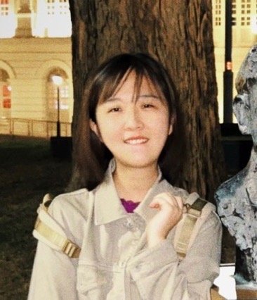

|
Yifan Zhang
|
 |
Research Assistant
School of Computing, National University of Singapore
at Computing 3, 11 Research Link, Singapore
119391
Email: zyifan828@gmail.com
[Github]
|
About me
My name is Zhang yifan, My research interests lie in HCI and
visualization.
-
I'm now a Research Assistant in SoC, National
University of Singapore under the supervision of Prof. Jin Song Dong and mentored by Prof. Yun Lin .
-
I obtained my Master degree in Computer Science from Donghua university.
-
I obtained my Bachelor degree in Computer Science and Fashion/design from Donghua university
News
-
[2022-07-21] [New!]
Our work "RegMiner: Mining Replicable Regression Dataset from Code Repositories" has
been accepted by FSE'22 (demo track),
Congratuations to Xuezhi!
Work Experience
-
Research Assistant @ National University of Singapore, 🇸🇬 Singapore, Aug. 2022 - now
-
Software Engineer @ Glodon Technology Co., Ltd, 🇨🇳 Beijing | Shanghai, Jun. 2020 - Jun. 2022
-
Software Engineer (intern) @ Shanghai TouchPal Information Technology Co., Ltd., 🇨🇳
Shanghai, Mar. 2019 - Aug. 2019
Talks
Last Updated: 2022-09-18
|